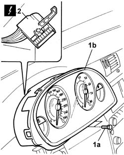

5560B11 ANALOGUE CONTROL PANEL - R.R. or Replace
- Path
- Procedures > 55 ELECTRICAL EQUIPMENT > 5560 ON-BOARD INSTRUMENTS > 5560B ANALOGUE INSTRUMENT PANEL > 5560B11 ANALOGUE CONTROL PANEL - R.R. or Replace
- Kind
- repair procedure (removal / refitting; the operation number is the code)
- Applies to
- all engines; all production periods
- Interactive page
- https://sloeber94.github.io/elrnDB-lThss/en/#/79622
Applies to: all engines; all production periods
 Removing
Removing
 Refitting
Refitting- Open the boot and disconnect the negative battery terminal.
See in Op. 5580C18 AIR BAG MODULE - R.R.
See in Op. 7040A26 Steering column TRIM - R.R.
See in Op. 4110A24 Electric steering wheel position CONTROL - R.R.
-
See in Op. 4110A10 STEERING WHEEL - R.R. for replacement or checks
-
See in Op. 5505A10 Junction UNIT - R.R.
See in Op. 7040A23 Instrument panel SURROUND in dashboard
1. Undo the fixing bolts (1a) and remove the analogue control panel (1b).
2. Disconnect the electrical connector for the analogue control panel.
 | Description | Connector |
|---|---|---|
2 | Instrument panel | E050A |
| Description | Connector |
|---|---|---|
2 | Instrument panel | E050B |

Applies to: all engines; all production periods
- Remove the analogue control panel.
Applies to: all engines; all production periods
Refitting
Removing- Connect the electrical connector for the analogue control panel.
| Description | Connector |
|---|---|---|
. | Instrument panel | E050A |
| Description | Connector |
|---|---|---|
. | Instrument panel | E050B |
- Fit the control panel in the special housing in the dashboard tightening the fixing bolts.
See in Op. 7040A23 Instrument panel SURROUND in dashboard
See in Op. 5550A10 stalk unit assembly - r+r
See in Op. 5580C12 CLOCK SPRING for AIR BAG system - R.R.
See in Op. 4110A10 STEERING WHEEL - R.R. for replacement or checks
-
See in Op. 4110A24 Electric steering wheel position CONTROL - R.R.
-
See in Op. 7040A26 Steering column TRIM - R.R.
See in Op. 5580C18 AIR BAG MODULE - R.R.
- Connect the negative battery terminal.
Topics linked from this page (8)
- 4110A10 STEERING WHEEL - R.R. for replacement or checks
- 4110A24 Electric steering wheel position CONTROL - R.R.
- 5505A10 Junction UNIT - R.R.
- 5550A10 stalk unit assembly - r+r
- 5580C12 CLOCK SPRING for AIR BAG system - R.R.
- 5580C18 AIR BAG MODULE - R.R.
- 7040A23 Instrument panel SURROUND in dashboard
- 7040A26 Steering column TRIM - R.R.
Topics that link to this page (46)
- C34 NO DATA SHOWN ON THE DISPLAY
- C35 THE BUZZER DOES NOT WORK
- C50 AUTOMATIC TRANSMISSION FAILURE SIGNAL
- K01 REV COUNTER NOT WORKING
- K03 SPEEDOMETER NOT WORKING
- K05 MILOMTER NOT WORKING
- K06 TRIP METER DOES NOT ZERO
- K08 THE DISPLAY DOES NOT SHOW THE OUTSIDE TEMPERATURE
- K10 DOORS OPEN CHECK NOT WORKING
- K15 CLOCK NOT WORKING
- K19 FUEL CONSUMPTION GAUGE NOT WORKING
- K20 FUEL LEVEL GAUGE NOT WORKING
- K21 FUEL RESERVE WARNING LIGHT NOT WORKING
- K25 ENGINE COOLANT TEMPERATURE GAUGE NOT WORKING
- K26 ENGINE COOLANT TEMPERATURE WARNING LIGHT NOT WORKING
- K60 ABS FAILURE WARNING LIGHT ON
- K61 ABS WARNING LIGHT OFF (INITIAL TEST NOT CARRIED OUT)
- K62 ABS AND HANDBRAKE WARNING LIGHTS BOTH ON
- K64 BRAKE FLUID WARNING LIGHT ON
- K66 HANDBRAKE WARNING LIGHT DOES NOT COME ON
- K68 ESP WARNING LIGHT IN CONTROL PANEL ON
- K69 HANDBRAKE FAILURE WARNING LIGHT ON
- K73 SEAT BELT NOT FASTENED WARNING LIGHT ON
- K90 INSTRUMENT PANEL LIGHTS NOT WORKING
- K91 INSTRUMENT LIGHTS NOT WORKING - DIMMER
- K95 INSTRUMENT PANEL NOT WORKING
- K100 MIL WARNING LIGHT NOT WORKING
- K101 M.I.L. WARNING LIGHT REMAINS ON - ENGINE STARTS
- K105 HEADLAMP ALIGNMENT FAULT DISPLAY AT THE MATRIX
- K106 POWER ASSISTED STEERING FAILURE DISPLAY AT THE MATRIX
- K107 DISPLAY OF SUSPENSION FAILURE MESSAGE AT MATRIX
- K109 ENGINE OIL PRESSURE FAULT DIAPLAY AT THE MATRIX
- K110 ENGINE OIL LEVEL INFORMATION INCORRECT
- 5010B56 Duct between climate control casing and air duct to rear seats - R.R.
- 5010D27 UPPER MIXED AIR TEMPERATURE SENSOR (one) left or right - R.R. following electrical circuit check
- 5010D28 LOWER MIXED AIR TEMPERATURE SENSOR (one) left or right - R.R. following electrical circuit check
- 5040C10 Air conditioning CASING - R.R.
- 5040D86 air conditioner right air mixture flap control motor - r r
- 5040D94 Air conditioning upper left air distribution flap control motor (DEFROST) - R.R.
- 5040D96 Air conditioning upper right air distribution flap control motor (DEFROST) - R.R.
- 5505C26 ENGINE COMPARTMENT built in wiring - R.R.
- 5505C31 Under-FACIA WIRING - R.R.
- 5505C41 PASSENGER COMPARTMENT built in WIRING - R.R.
- 7040A10 Instrument facia TRIM - R.R.
- 7040A95 Left or right reinforcement crossmember (one), dashboard and bodyshell supporting crossmember - R.R.
- 7040L17 Passenger compartment front floor carpet - R.R.